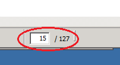
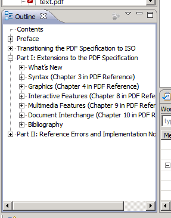
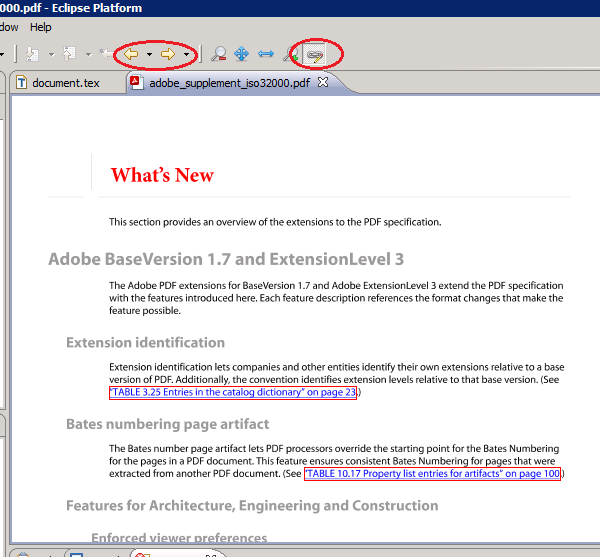
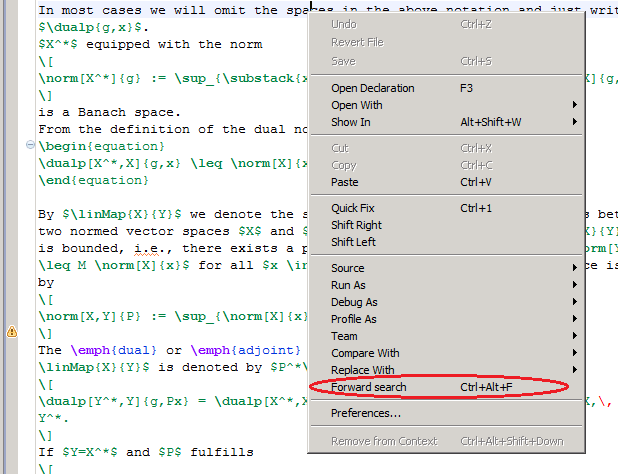

PDF renderer
Since version 1.1.0, Pdf4Eclipse supports two different libraries to render the pdf documents. The pdf renderer from SUN is fast and supports a wide range of documents. It does not support CID Type 0 fonts, which are often used in documents with Asian character sets. The JPedal renderer has a higher compatibility and supports all font types. It is a little bit slower though. You can change the renderer used in Pdf4Eclipse's preferences.
Navigation
To navigate in a pdf document you can use the keyboard or the mouse wheel. If
"Pseudo continuous scrolling" is enabled, you can scroll through the whole document
using the mouse wheel. Otherwise you can only scroll on the current page.
Besides that it is possible to jump to a specific page number by entering it
into the page field in the status bar, or using the navigation arrows.

Outline
If it is included in the pdf document, Pdf4Eclipse can show the bookmarks
(often more like a table of contents) of the document in the Outline view.
You can directly jump to a specific bookmark by selecting it in the outline.

Annotations
Another possibility to navigate in a pdf is by using annotations which are marked by a red frame in the document. By clicking inside this frame you go to the specified location. This could also be a web page in which case a browser window is opened.
You can always go back to the last position by using the navigation buttons in the task bar or the corresponding entries in the Navigate-Menu.
The highlighting of annotations can be turned on and off
by a button in the task bar.

Zoom
You can change the presentation of the pdf by changing the zoom factor with the
buttons on the task bar or '+' and '-' keys.

It is also possible to change the zoom level by using the mouse wheel
while the ctrl-key is pressed.
SyncTeX support
SyncTeX is a extension, which enables synchronization of pdf documents and its (La)TeX sources. It is supported in most modern LaTeX distributions, e.g., in TeXLive since TeXLive 2008 and in MikTeX since version 2.7.
To enable SyncTeX for your build, you need to activate it with the
-synctex command line switch,
e.g., pdflatex -synctex=1 test.tex
More technical details about SyncTeX can be found on the official SyncTeX page.
Pdf4Eclipse natively supports SyncTeX and enables the user to use both the forward and inverse search features. For this it uses its own SyncTeX parser, since there is no official Java implementation. Therefore, it can happen that the forward and inverse search results are different from the results in other PDF viewers.
Forward search
By forward search we denote the process of finding the position in the pdf file that corresponds to the cursor position in the active tex-file. For a successful forward search it is necessary that the corresponding pdf file is already open in Eclipse. To make a forward search, open the context menu by right-clicking somewhere in the editor and selecting Forward search. Another possibility is to use the short key Ctrl+Alt+F.
 This command is enabled in every text editor.
Inverse search
By inverse search we denote the process of the line in the source file that corresponds to the mouse cursor position in the pdf-file. A inverse search is triggered by a simple double-click in the pdf document on the searched position. If it successful, Pdf4Eclipse opens the source file and highlights the line that fits best.